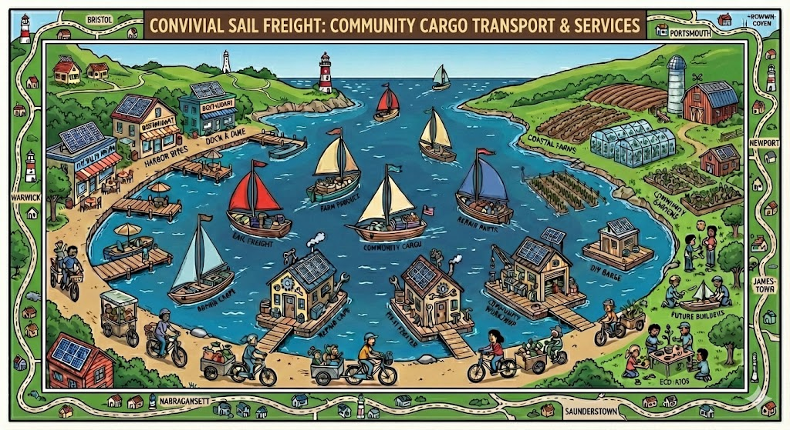
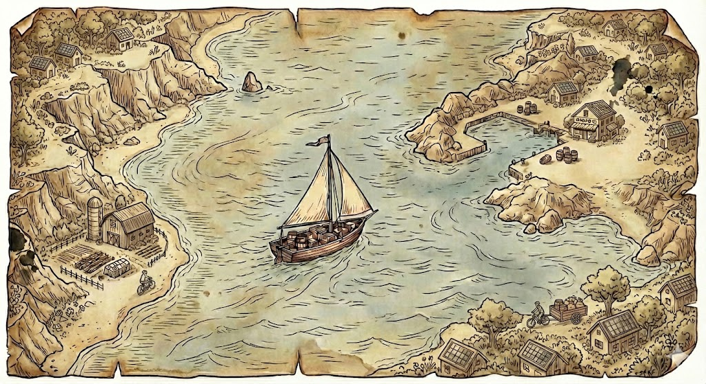
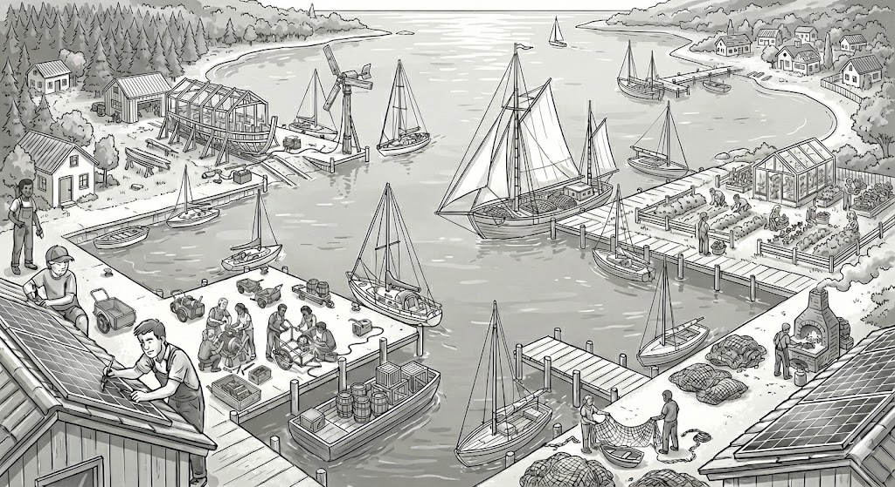

Cargo Runs
Fresh produce, repair parts, solar kits, zines—whatever needs moving across the bay. We'll haul your goods by wind and tide.

We're a loose-knit group of sailors, farmers, business owners, students, and others exploring lower-carbon, high-relationship ways of living on Narragansett Bay
Sign up to contribute ideas, do a small cargo run with your sailboat, share a skill, learn a skill, help out
All of this is an experiment. We're a ragtag assembly of sailors, farmers, tinkerers, teachers, and curious folks. No central authority—just people organizing themselves.
Pay-what-you-can, mutual aid, gift economy, fair wages—all valid. No rigid blueprint, no top-down rules. We're testing what works, together.
The real cargo is connection. We're building relationships, giving kids a sense of adventure, and creating community on the water.
Sail cargo has history here. We're learning how pre-fossil-fuel economies worked and asking what those techniques might teach us about a lower-energy future.
"Pedagogy disguised as low-carbon logistics… or is it vice-versa?"
"Quiet rebellion against the Old Grid, one knot at a time."

Fresh produce, repair parts, solar kits, zines—whatever needs moving across the bay. We'll haul your goods by wind and tide.
A floating tool library. We'll dock wherever, pop open the lids, and help folks fix their outboards, radios, and whatever else needs mending. Not charity—commons.
Build-a-Boat Saturdays · Cargo-Repair Clinics · Tide-to-Table Evenings · Mesh-Net Nights. Kids will get experience, adults will get skills, everyone will get community.
Cargo runs might double as surveys: we can monitor water quality, check dock infrastructure, map shoals. All data open-source, scribbled on deck and shared freely.
Not just boating—cooking, craft-making, foraging, mending, fermenting. Bring what you know, learn what you don't. The bay is just the context for connection.
Narragansett Bay has centuries of sail cargo history. We'll explore it together—learning from the past to imagine a different future.

These are experiments in progress. Want to help build them?
Phone charging stations powered by the sun, with LoRa radios for off-grid communication. Built by kids and adults together.
Simple sensors to track tide levels and alert folks if boats at dock have taken on water. Community resilience infrastructure.
When the wind ghosts out, can we pedal instead of motor? We're testing rigs, measuring energy, and having fun doing it.
A boat kitted out with tools for motors, battery installations, electronics. We come to you. Bring your broken stuff.
Coffee and food served from the water. Because why not? Community gathering, afloat.
One sheet of plywood, some nails, a weekend. Build something that actually floats. Teach buoyancy while you're at it.
This is a work in progress. We need all kinds of folks.
Got a boat? Want to haul cargo, teach sailing, or just join the crew?
Have goods that need to move across the bay? Let's talk wind-powered logistics.
Want local goods delivered by sail? Interested in tide-to-table sourcing?
Field trips, workshops, hands-on learning about boats, food systems, and renewable energy.
Know how to fix things? Share your skills at our floating repair cafes.
Don't know anything yet? Perfect. Come learn with us. All skill levels welcome.